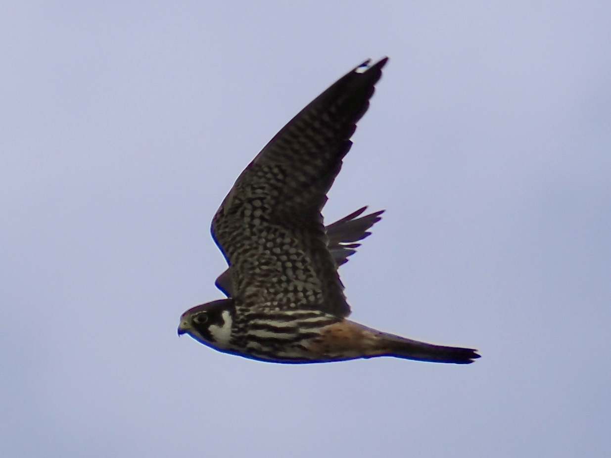
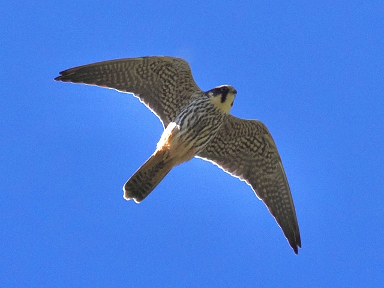
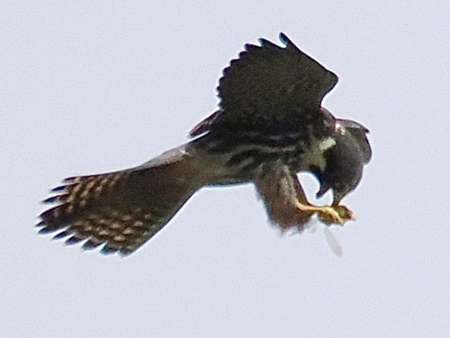

Eurasian Hobby
Falco subbuteo
Order: Falconiformes
Family: Falconidae

A medium-sized falcon with a dark back, white belly and reddish "trousers". Breast has vertical streaks.

Person A: Hi, nice to meet you! Do you have any hobbies?
Me: Oh yes, one. Eurasian. You?
Person A:
Person A: Uh... drawing?

Very fast and agile fliers. This one is eating a dragonfly on the wing, and they have also been known to catch small aerial birds like swallows.